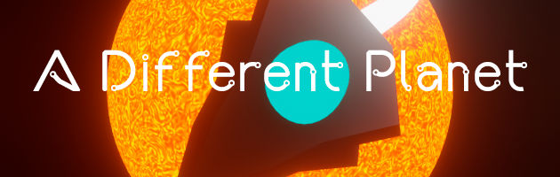

A Different Planet
Unity
Briefing
A different planet is the first game I uploaded to the internet. It took me two weeks to create in my spare time for the Beginners Circle Jam #3.
All assets were made from the ground up except for the music and some of the sound effects
The goal of the game is to find a different planet in a galaxy filled with boredom and contempt.
It plays as a plataformer in which you must visit all the planets to open the gate to the next sector, while accounting for the gravity of the different celestial bodies.
You can play it here.
Screenshots
Ch. 01
Gameplay
Ch. 02